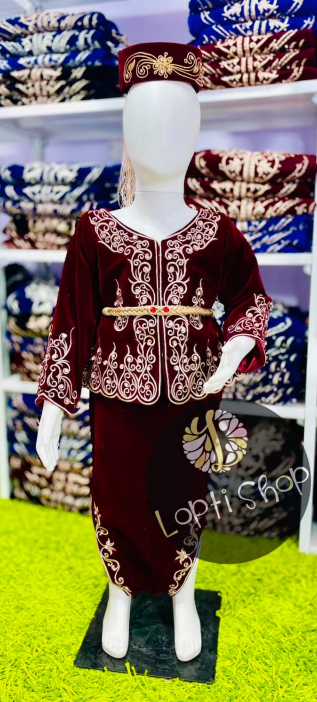

Karako · Textile · Dain japonaise
Loptishop est algérien et faits à la main.
Loptishop est une sélection de Vetements et accessoires artisanaux algériens pour fillettes faits à la main. traditionnels, selon des gestes transmis depuis des générations. Chaque pièce est unique.
Découvrir la collection